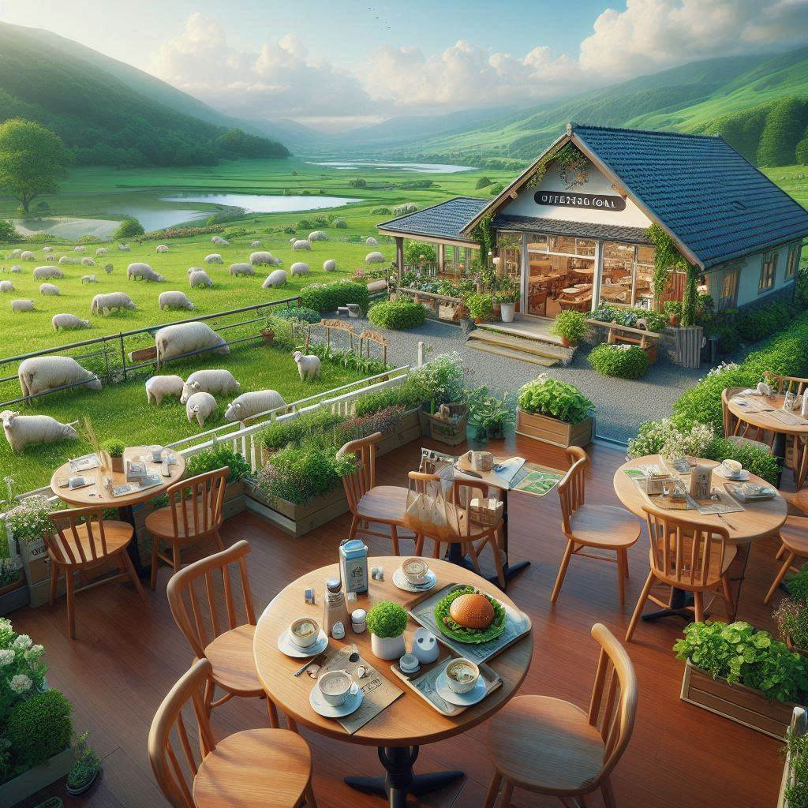

El origen de la Cafetería

Una mañana en Paraguay…
Imagina una fría mañana de invierno en el corazón de Paraguay, cuando el sol apenas
asoma entre la neblina y el viento fresco acaricia las calles de tierra roja. En las cocinas de los hogares,
las brasas ya crepitan mientras se prepara el mate para empezar el día. Sin embargo,
en un rincón especial, nace algo diferente: el aroma profundo y reconfortante del café
recién molido llena el aire, mezclándose con el olor a chipa que acaba de salir del horno,
crujiente y dorada. Este no es un café cualquiera, es un viaje a los campos del sur de América,
donde cada grano ha sido cultivado con esmero en las fértiles tierras que se extienden a lo largo de la región.
Así es como nuestra cafetería cobra vida, inspirada por esas mañanas paraguayas llenas de tradición, calor humano y sabores auténticos. Cada taza de café que servimos no solo es una bebida; es una invitación a recorrer la historia de los pueblos que cultivaron el primer grano, de las manos que lo cuidaron y de las tierras que lo vieron crecer.
Nuestra cafetería no es simplemente un lugar donde venir a tomar algo, es un espacio donde se celebra la herencia cultural y culinaria de Paraguay, donde cada bocado y cada sorbo te invita a descubrir un pedacito de ese país vibrante y lleno de vida.